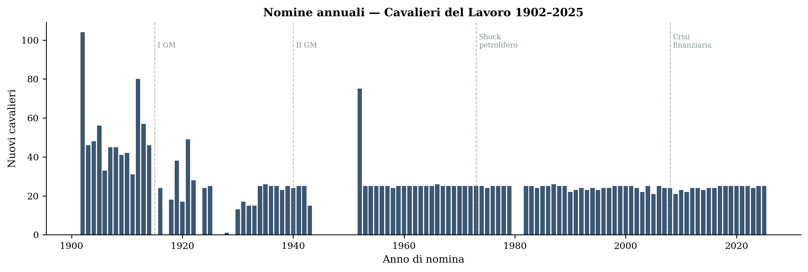
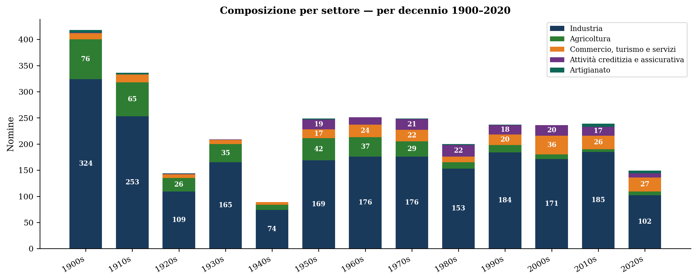
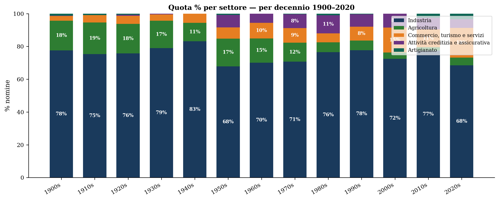
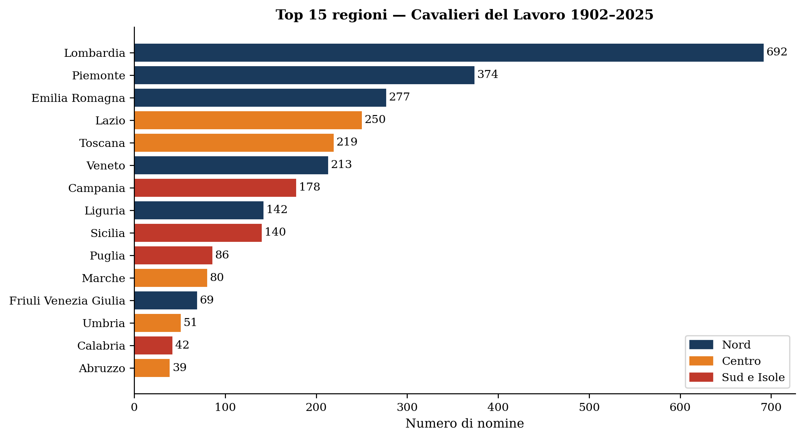
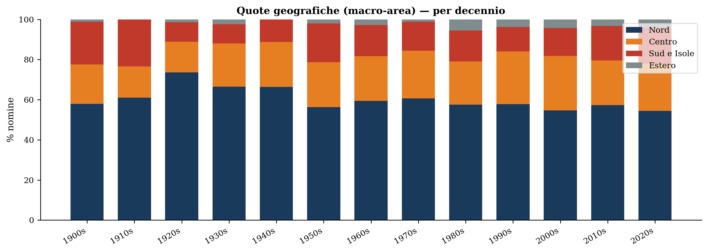
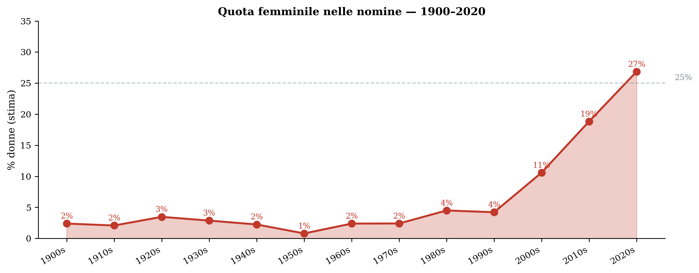
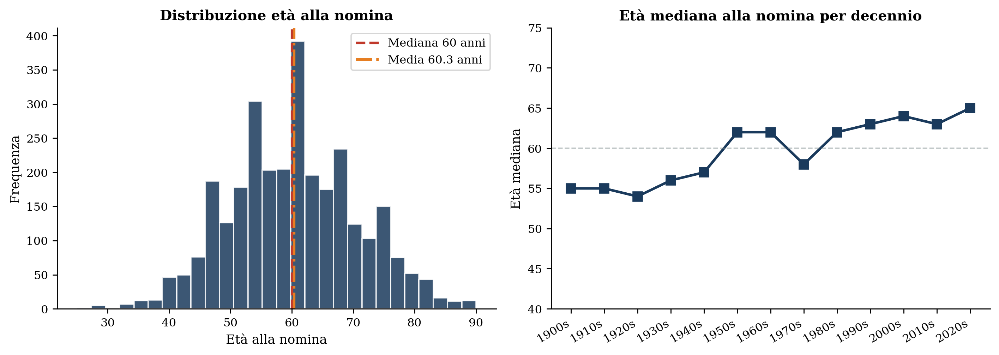
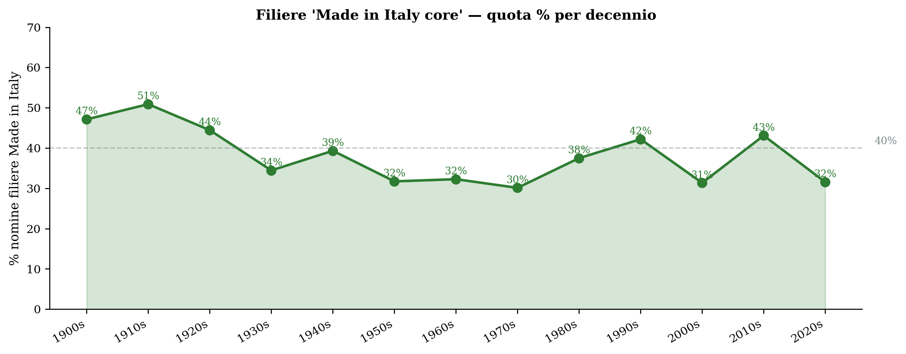
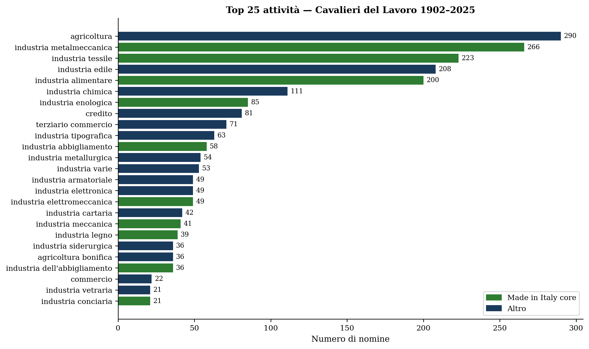
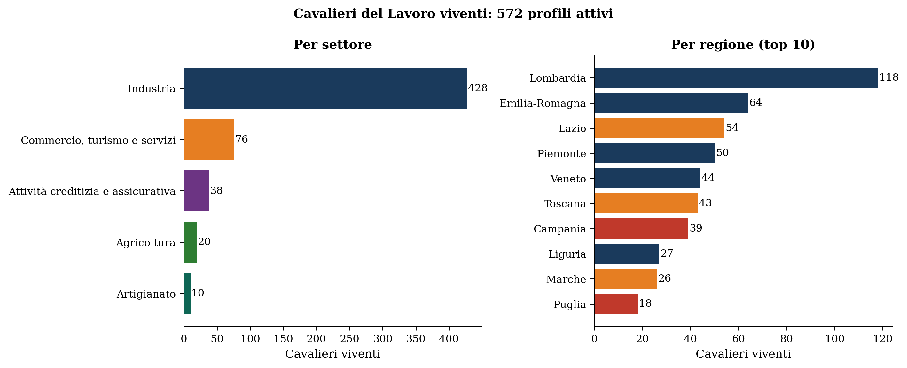

Cavalieri del Lavoro 1902–2025
Serie storica dell’eccellenza produttiva italiana riconosciuta dallo Stato
Paolo Volterra ![]()
Analisi dell’archivio storico completo dei Cavalieri del Lavoro (1902–2025), estratto dall’API pubblica della Federazione Nazionale (pannello.cavalieridellavoro.it): 3.006 profili con biografie complete, regione di nomina, settore e attività. La serie documenta oltre un secolo di riconoscimento istituzionale dell’eccellenza produttiva italiana — da un sistema dominato da industria e agricoltura agli inizi del Novecento a una struttura plurisettoriale con crescente presenza femminile e di servizi avanzati. Emerge un’Italia imprenditoriale concentrata in Lombardia, Piemonte ed Emilia-Romagna (44% delle nomine), con una quota meridionale strutturalmente sottorappresentata. La composizione settoriale riflette i cicli dell’economia italiana: industrializzazione precoce del Nord, rimonta dell’agroalimentare dal secondo dopoguerra, emersione dei servizi finanziari dagli anni ’80, timida comparsa del digitale nel decennio 2010. Il genere femminile passa dall’1% nelle prime decadi al 25% nelle nomine più recenti.
Cavalieri del Lavoro, Made in Italy, élite imprenditoriali, serie storica, capitalismo familiare, geografia dello sviluppo
1 Il dataset: un secolo di onorificenze
L’archivio della Federazione Nazionale dei Cavalieri del Lavoro raccoglie 3.006 profili completi di cavalieri nominati dal 1902 al 2025. Ogni scheda include la biografia estesa, la regione di nomina, la data di nascita, il settore e la specifica attività — una fonte straordinaria per lo studio longitudinale dell’eccellenza produttiva italiana riconosciuta dallo Stato.
| Indicatore | Valore |
|---|---|
| Record totali | 3,006 |
| Anni coperti | 1902–2025 |
| Viventi | 572 |
| Con biografia completa | 3,006 |
| Con regione di nomina | 3,006 |
| Con data di nascita | 3,001 |
| Donne (stima) | 173 (6%) |
Tabella 1

Figura 1: Nomine annuali 1902–2025. Le variazioni riflettono scelte discrezionali del Consiglio dell’Ordine e interruzioni belliche (1914–18, 1940–45).
La serie mostra l’impronta degli eventi macroeconomici (Figura 1). Le due guerre mondiali azzerano le nomine; la ripresa è rapida ma i numeri annui rimangono contenuti fino agli anni ’50. Dal dopoguerra le nomine si stabilizzano attorno a 25 per anno, il numero codificato dal regolamento vigente. La prima metà del Novecento ha una densità di nomine molto più alta perché l’istituzione era più giovane e i criteri di anzianità si stavano consolidando.
2 Serie storica per decennio

Figura 2: Composizione delle nomine per settore e decennio. La scala assoluta riflette il numero diverso di nomine per periodo (ciclo bellico, regolamenti, anni coperti per decennio incompleto).

Figura 3: Quote percentuali per settore e decennio. Evidenzia i cambiamenti strutturali nella composizione del riconoscimento istituzionale.
La composizione settoriale rivela tre grandi transizioni storiche (Figura 3):
Prima fase (1900–1940): l’Agricoltura pesa tra il 15% e il 20% delle nomine — un dato coerente con la struttura di un’economia ancora fortemente rurale. L’Industria domina in assoluto ma è concentrata in pochi settori (tessile, metalmeccanico, cantieristica). Il Credito è quasi assente.
Seconda fase (1950–1980): il boom industriale è evidente. La quota di Industria rimane alta ma si diversifica — compaiono elettronica, chimica, componentistica. Il Credito emerge come categoria autonoma dal 15% al 25% delle nomine, segnalando il ruolo crescente del sistema bancario nel capitalismo italiano del dopoguerra.
Terza fase (1990–2025): i Servizi (Commercio, turismo e servizi) crescono dal 5–8% al 17–18%. L’Artigianato torna visibile nelle nomine più recenti — ma ora ha un significato diverso: non artigianato di subsistenza ma eccellenza manifatturiera di nicchia (pelletteria, gioielleria, penne stilografiche). L’Agricoltura scende sotto il 5% nel 2010s, prima di risalire col vino e l’agrifood premium nel 2020s.
3 Distribuzione geografica
Figura 4: Cavalieri del Lavoro 1902–2025 per regione di nomina (esclusi 71 ‘Estero’). Colore proporzionale al numero totale di nomine.

Figura 5: Prime 15 regioni per numero totale di nomine 1902–2025. In verde le regioni del Nord, arancio il Centro, rosso il Sud e Isole.
La concentrazione geografica è un tratto strutturale di lungo periodo (Figura 4, Figura 5). Lombardia (692), Piemonte (374) ed Emilia-Romagna (277) da soli coprono il 44% dell’intero archivio storico. Veneto (213) e Toscana (219) completano il quintetto del Made in Italy manifatturiero.
Il Lazio (250) è la grande eccezione meridionale — ma il peso romano riflette la concentrazione di sedi legali, holding e imprese di servizi nella capitale, più che una vocazione produttiva paragonabile alla pianura padana.
Il Mezzogiorno è strutturalmente sottorappresentato: Campania, Puglia, Sicilia e Calabria insieme raggiungono il 18% delle nomine, a fronte di un peso demografico del 34%. Il dato è coerente con la letteratura sul dualismo economico italiano — ma richiede una lettura sfumata: le nomine meridionali tendono a concentrarsi in settori specifici (agroalimentare, commercio, costruzioni) che riflettono le specializzazioni del territorio.

Figura 6: Evoluzione delle nomine per macro-area geografica (Nord, Centro, Sud e Isole, Estero), per decennio.
La quota del Nord è rimasta sostanzialmente stabile al 55–65% per tutto il periodo (Figura 6), con una lieve erosione negli anni 2000 a favore dei servizi del Centro-Sud. La quota “Estero” (imprenditori italiani residenti o operanti fuori dai confini) oscilla tra il 2% e il 5%, con punte nei decenni di forte emigrazione.
4 Genere: un secolo di trasformazione

Figura 7: Quota femminile stimata nelle nomine per decennio, 1900–2020. La stima è basata su pattern del nome.
| Decennio | Totale nomine | Donne (n) | % donne |
|---|---|---|---|
| 1900s | 420 | 10 | 2.4% |
| 1910s | 338 | 7 | 2.1% |
| 1920s | 147 | 5 | 3.5% |
| 1930s | 211 | 6 | 2.9% |
| 1940s | 91 | 2 | 2.2% |
| 1950s | 249 | 2 | 0.8% |
| 1960s | 253 | 6 | 2.4% |
| 1970s | 251 | 6 | 2.4% |
| 1980s | 204 | 9 | 4.5% |
| 1990s | 241 | 10 | 4.2% |
| 2000s | 246 | 25 | 10.6% |
| 2010s | 257 | 45 | 18.8% |
| 2020s | 175 | 40 | 26.8% |
Tabella 2
La traiettoria della presenza femminile è una delle più significative trasformazioni di lungo periodo documentate nell’archivio (Figura 7). Dall’1–2% dei primi decenni del Novecento, la quota femminile sale a oltre il 17% nel 2010s e al 25% nel 2020s.
Due meccanismi possono spiegare questa progressione. Il primo è strutturale: il capitalismo familiare italiano ha storicamente trasmesso la guida dell’impresa ai figli maschi; con il cambiamento nelle norme di successione e nei modelli educativi, le figlie sono diventate titolari di impresa con frequenza crescente. Il secondo è istituzionale: le segnalazioni prefettizie e ministeriali riflettono i mutamenti nella visibilità delle donne imprenditrici nelle associazioni di categoria.
5 Età alla nomina

Figura 8: Distribuzione dell’età alla nomina (archivio completo, n=2.943 con dati disponibili). La mediana è 60 anni.
La mediana dell’età alla nomina è 60 anni (Figura 8), con una distribuzione quasi simmetrica tra 50 e 70. Il requisito dei vent’anni di attività continuativa con responsabilità autonoma produce strutturalmente una selezione verso la maturità: chi viene nominato a 50 anni ha iniziato a costruire la propria reputazione a 30, mentre chi viene nominato a 70 è spesso un leader storico del settore, riconosciuto “con ritardo” dall’istituzione.
L’età mediana è rimasta notevolmente stabile nel tempo, oscillando tra 55 e 65 anni per tutto il periodo — segno che il meccanismo di selezione non è cambiato nelle sue logiche di fondo, anche quando è cambiata la composizione settoriale e di genere del pool di nominati.
6 Made in Italy proxy: le filiere classiche

Figura 9: Quota % di nomine attribuibili a filiere ‘Made in Italy core’ per decennio. Proxy costruita su parole chiave in attivita_it e settore.

Figura 10: Top 25 categorie di attività (attivita_it normalizzata) — archivio completo 1902–2025.
Il proxy Made in Italy oscilla tra il 30% e il 50% delle nomine per decennio (Figura 9), senza una tendenza monotona chiara. I picchi coincidono con decenni di forte espansione della manifattura tradizionale (1910s, 1980s, 2010s); i minimi riflettono la penetrazione di settori non-manifatturieri (credito, servizi, edilizia pubblica).
La top-25 delle attività (Figura 10) conferma il cuore del sistema produttivo premiato: industria metalmeccanica, industria tessile, industria alimentare, agricoltura ed edilizia rappresentano da soli oltre il 35% dell’archivio. Colpisce la presenza dell’industria armatoriale tra le prime posizioni — un settore che riflette l’importanza storica della marineria mercantile italiana (Genova, Napoli, Venezia) nel capitalismo dell’Ottocento e del primo Novecento.
7 Cavalieri viventi: il Made in Italy attivo

Figura 11: Composizione dei 607 Cavalieri del Lavoro viventi per settore e regione.
I 572 cavalieri viventi rappresentano il Made in Italy istituzionalmente riconosciuto e ancora attivo. La composizione riflette il peso dei settori premiati negli ultimi trent’anni: l’Industria domina con oltre l’80%, mentre i Servizi hanno guadagnato quota relativa rispetto all’archivio storico. La concentrazione regionale è simile al totale storico, con Lombardia, Piemonte ed Emilia-Romagna in testa.
8 Note metodologiche
Fonte: API pubblica pannello.cavalieridellavoro.it/api/public/knights/{brevetto} — endpoint di dettaglio per singolo cavaliere. Dati estratti il 2026-06-03.
Copertura: 3.006 record su 3.043 presenti nella lista generale (37 brevetti restituiscono 404 sul dettaglio, presumibilmente record incompleti lato server). L’anno 2026 non è ancora nell’API al momento dell’estrazione.
Genere: stimato da pattern del nome (lista di nomi femminili italiani + regole morfologiche). La stima è accurata per i nomi comuni ma può sbagliare su nomi stranieri, rari o ambigui. Si stima un errore del 2–4%.
Made in Italy proxy: classificazione binaria basata su parole chiave nel campo attivita_it e settore. Non cattura le sfumature dei quattro assi analitici (etichetta d’origine, brand, produzione, controllo) proposti nel framework teorico.
Età anomale: un record (brevetto n. 45, Sarica Giuseppe) mostra età negativa alla nomina — presumibile errore nell’anno di nascita nel database della Federazione. Escluso dall’analisi delle età.
Trasparenza sull’uso dell’intelligenza artificiale
L’uso di strumenti di intelligenza artificiale generativa è dichiarato esplicitamente in quanto parte del processo di lavoro seguito nella redazione del presente documento. Tali strumenti sono stati impiegati a supporto della lettura, della sintesi, della riorganizzazione argomentativa e della revisione testuale, sempre nell’ambito di un processo pienamente controllato dall’autore.
La responsabilità per le fonti utilizzate, le analisi condotte, le verifiche effettuate, le interpretazioni proposte e le conclusioni formulate resta interamente in capo all’autore.
L’intelligenza artificiale è stata utilizzata come ambiente di supporto cognitivo ed editoriale, non come fonte primaria, autore autonomo o sostituto del giudizio critico.